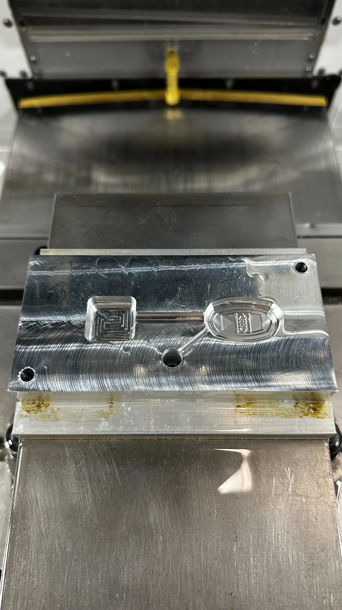
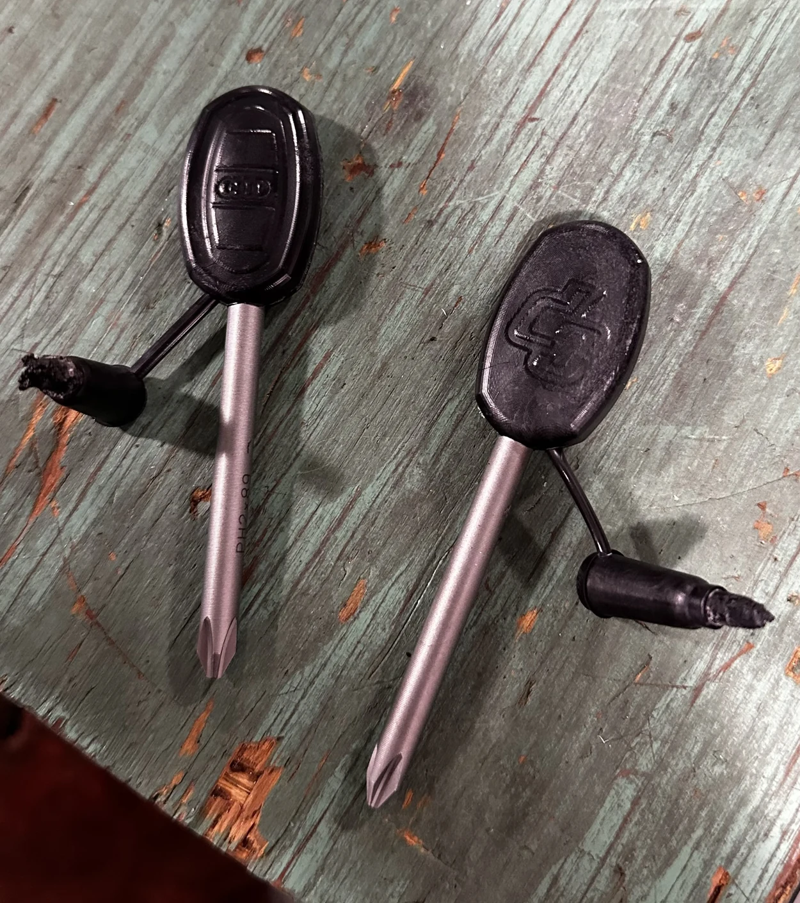
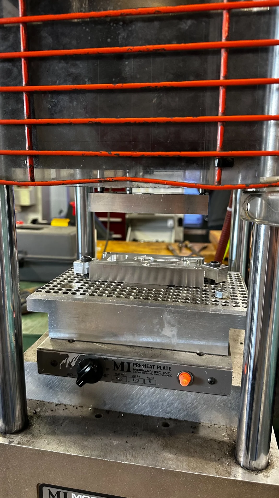
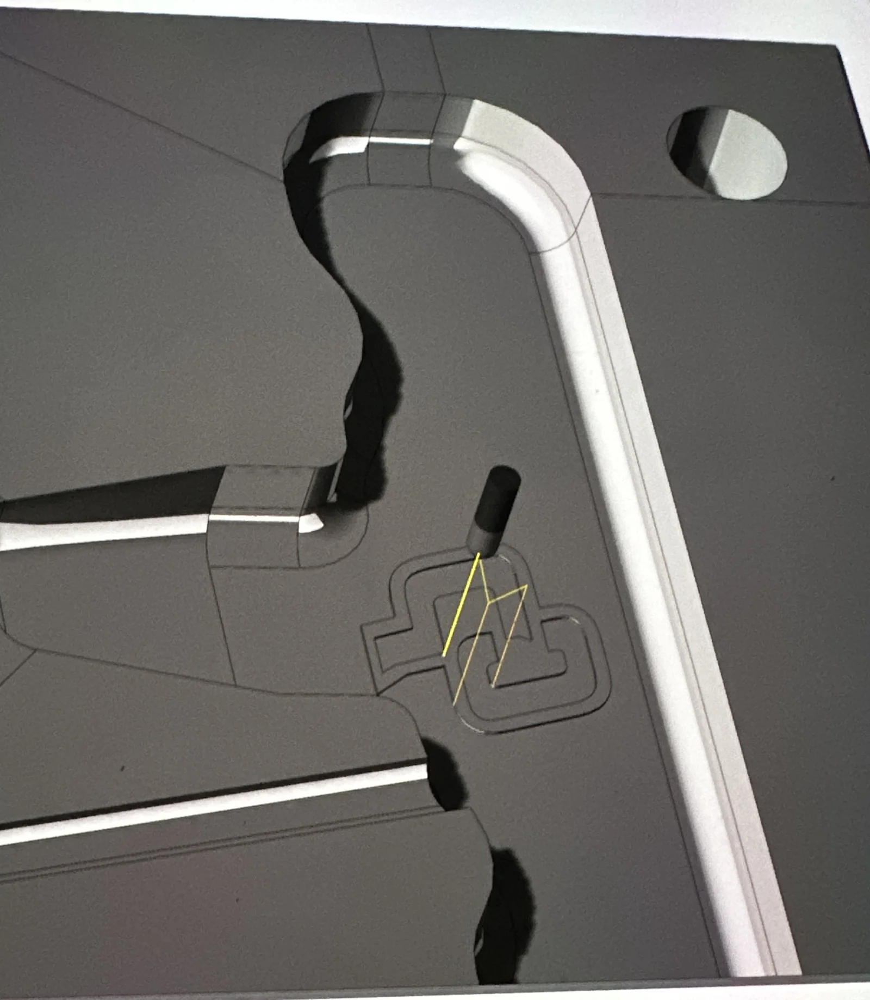

02 / IME 450 · INJECTION MOLD DESIGN · SPRING 2026
Injection-Molded
Screwdriver.
Designing an ergonomic screwdriver handle with manufacturability in mind—from a revised automotive-inspired concept to functional injection-molded prototypes.
The ~3-minute cycle was observed during trials, not demonstrated as a production run rate. The finished handles retained a width discrepancy noted in the team report.


Our two-person team set out to create an ergonomic screwdriver handle with a distinctive automotive influence, using a two-piece aluminum mold and an embedded metal blade.
The first concept followed the silhouette of a Porsche. We realized its irregular profile would complicate the parting line, thickness control, cooling and mold machining, so we reinterpreted the idea as a compact car key fob.
The redesigned oval handle maintained the automotive character while simplifying the geometry. We machined an Audi emblem and CP lettering directly into the mold, so the details appeared on the injection-molded part without a separate decoration step.
Black high-impact nylon
Aluminum machined on Haas VF-2
On mold-cavity walls for part release
Allowance applied to cavity design
The assignment also specified a maximum 5-inch overall screwdriver length, a standard Wera Phillips blade with at least 1 inch overmolded, and mounting/alignment features for the Morgan G100T press.
03 / PRODUCT & TOOLING DESIGN
Designed for molding.
Engineered for machining.
Our initial Porsche-silhouette concept created difficulties for mold parting-line placement, cavity machining and maintaining reasonably consistent material thickness. We revised the design to a rounded, key-fob-inspired handle, retaining visual identity through molded-in Audi and Cal Poly details.
We developed the two-piece mold with drafted cavity walls, shrinkage allowance, blade seating, alignment pins, runner entry, and mounting features for the Morgan G100T press.
The design was intended to be practical to grip and straightforward to mold; no formal ergonomic study was performed.
View engineering drawing package


04 / CNC MACHINING
Making the tool.
Program the tooling. Prepared and checked CNC toolpaths for the two aluminum mold halves on the Haas VF-2.
Machine the cavities. Produced the mold halves, including the screwdriver-blade seating feature and molded-in emblem and lettering.
Resolve the setup issue. At the Morgan press, the two mold halves would not close completely with the blade between them. Measurements against our SolidWorks model confirmed a discrepancy, so we ran an additional machining pass to correct the affected geometry.



05 / INJECTION MOLDING
Dialing in the process.
With the mold corrected, we began molding around the metal screwdriver blade. Early trials produced short shots and flashing. Increasing injection pressure improved cavity filling but encouraged flash; lowering it reduced flash while leaving the part incomplete.
By iterating on the machine settings, we found conditions that produced complete screwdriver handles with acceptable part quality. Our trials recorded an approximately three-minute molding cycle.
We checked blade fit in the intended slot and verified that the molded handle encompassed the embedded portion of the blade.
Reported trial setting
Reported trial setting
Observed cycle time per part
Cost model for a 12,000-unit production run
The $11.19 figure is a projected cost, not the measured cost of a completed 12,000-unit production run. The course brief specified 10,000 units/year, while our final report modeled costs using 12,000 units.
07 / TROUBLESHOOTING
When the part
didn't match CAD.
The mold looked successful after CNC machining, but it would not close completely around the blade when we set it up in the Morgan press.
That physical fit issue prompted us to measure the mold and compare it with the SolidWorks model. The dimensional mismatch affected the blade seat, so we returned to the CNC machine for a corrective pass before continuing molding trials.
The team's report also recorded a 0.915 in finished width against a 0.944 in design target; that residual deviation should not be confused with the corrected blade-seat interference.
The experience reinforced the need to inspect tooling as an assembled system, not just confirm that each CNC program completed without incident.
08 / REFLECTION
From design intent
to a working part.
We transitioned from an irregular vehicle silhouette to a moldable key-fob form, corrected a fit issue discovered at press setup, and balanced process parameters to produce complete prototypes.
Our blade-fit and visual checks confirmed the intended assembly, without implying mechanical retention or ergonomic performance testing.
Two-person Cal Poly IME 450 project. Approximately three-minute cycle measured during molding trials.
More engineering projects